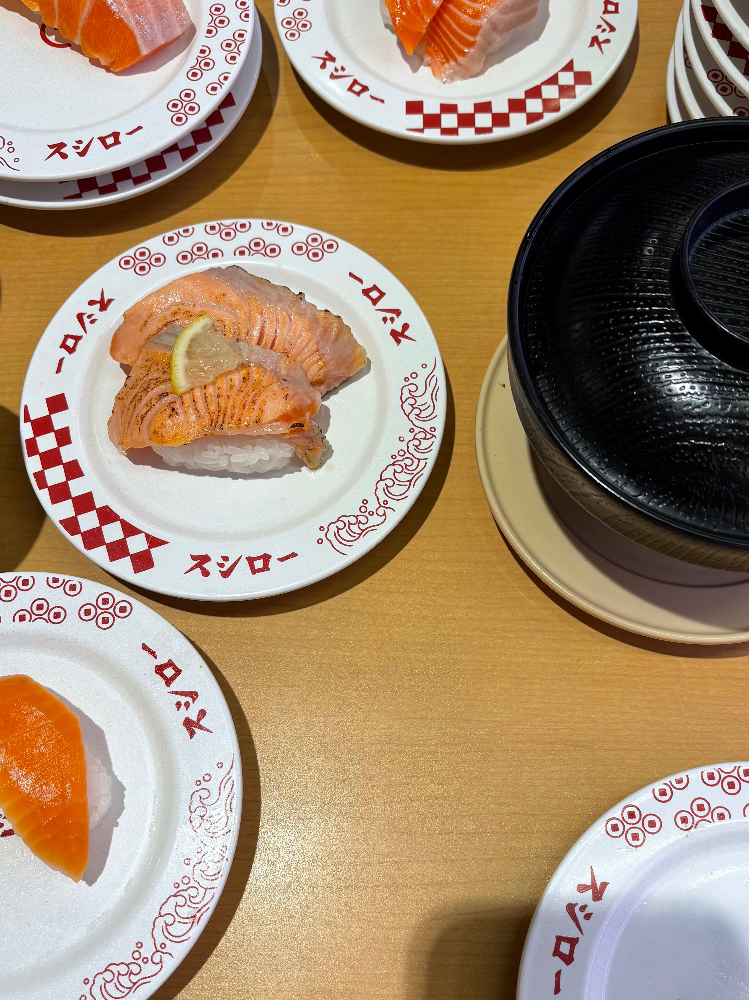
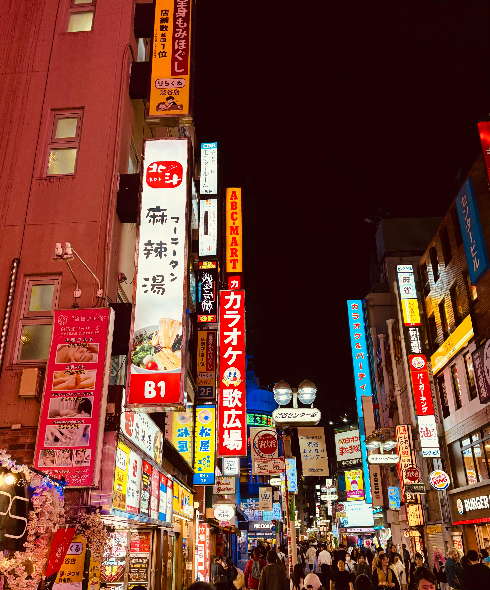
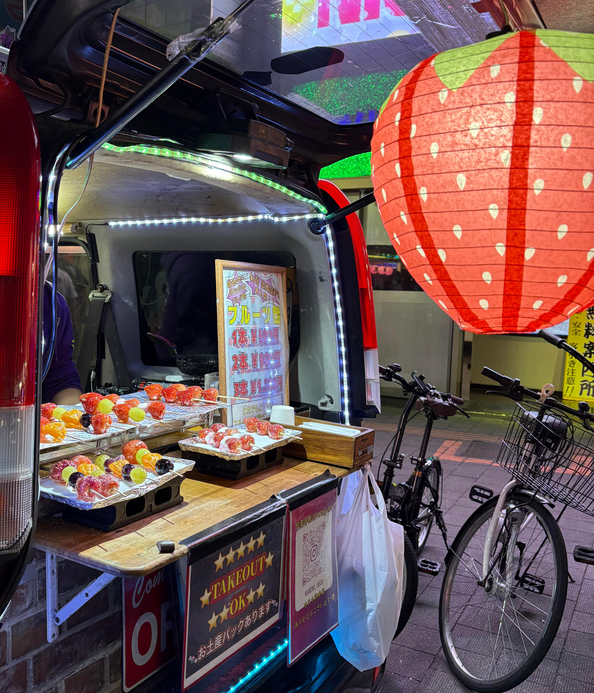
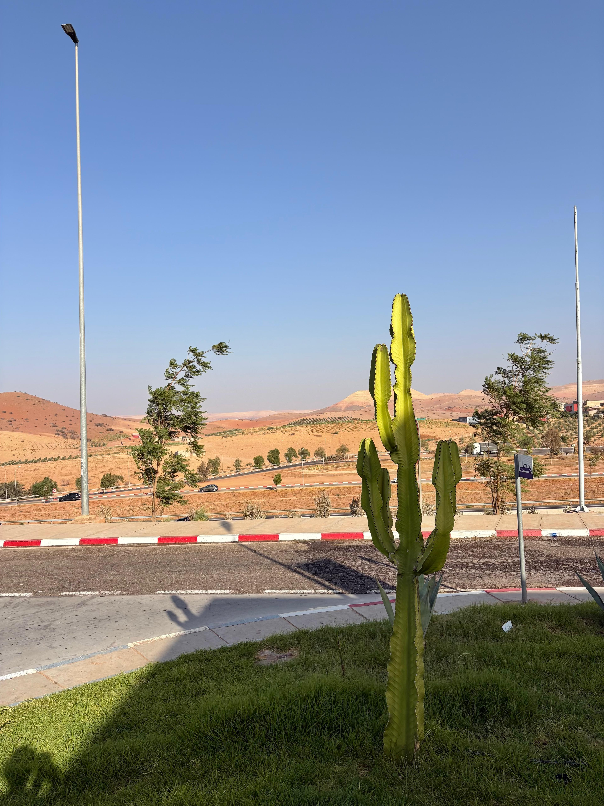
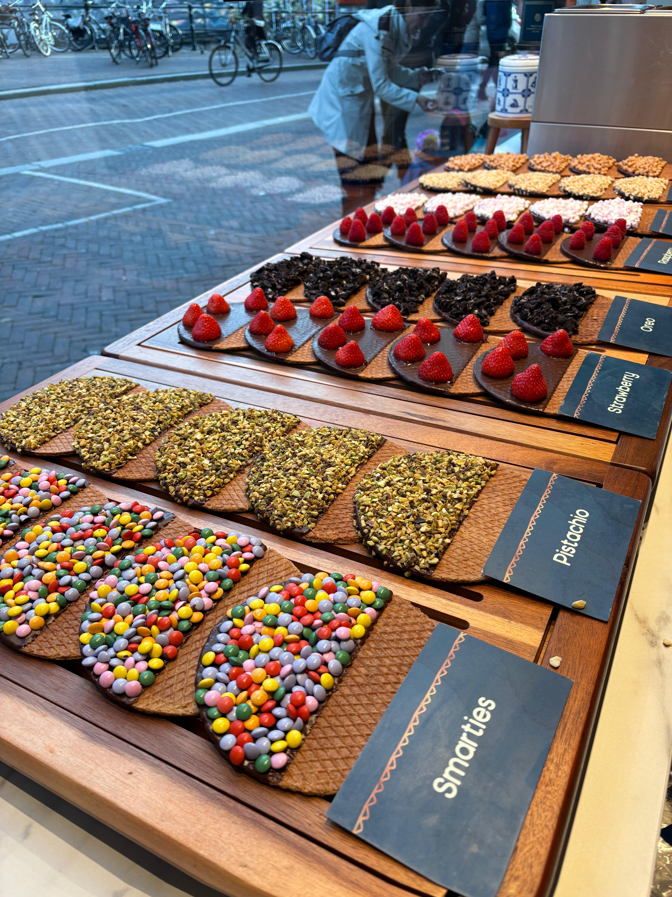

Maï-Sarah Said
Business & Data Analyst | Project Management | Information Systems
Available from September 2026 onwards
Through this portfolio, you can explore selected projects and experiences
at the intersection of data, information systems and digital transformation.
Enjoy your visit, and thank you for your interest.

About Me
Act as an IT Business Analyst / PMO at LVMH Beauty Tech, leveraging a Master’s degree in Innovation & Data Science from Paris 1 Panthéon-Sorbonne to bridge Data, IT and Business in complex, international environments.
My work focuses on structuring information systems, ensuring application landscape coherence and supporting digital initiatives across complex ecosystems including platforms such as PIM, DAM, CRM, e-commerce and data solutions.
With a hybrid profile combining data analysis, information systems structuring and project coordination, I design data-driven dashboards, align cross-functional stakeholders and contribute to clearer, more reliable and actionable information across the organization.
Seeking a full-time opportunity combining data, digital projects and a global Information Systems perspective.
Skills
Information Systems
- Enterprise Architecture Governance: application landscape management • repository structuring • data reliability • cross-functional consistency
- Business–IT Alignment: functional scoping • process analysis • specifications • stakeholder management
- Project Steering: milestone tracking • governance reporting • roadmap development
Data & Performance Management
- Data-Driven Decision Support: SQL • KPI design • data consolidation • performance monitoring
- Data Analysis & Quality: extraction • transformation • validation • control frameworks
Tools & Technologies
- Project & BI Tools: MS Project • Excel (Pivot Tables, Power Query) • Power BI • PowerPoint
- Modeling & Architecture: UML • Visio • Lucidchart
- Programming: SQL • Python (Pandas, NumPy)
How I Work
Analytical mindset, structured problem-solving and clear cross-functional communication. Comfortable navigating complex environments with rigor, curiosity and adaptability.
Languages
Experience
LVMH Beauty Tech
Business Analyst IT / PMO | Jan 2026 – Jul 2026 | Neuilly-sur-Seine- Governed the Enterprise Architecture repository (1,000+ applications) and ensured cross-functional data consistency
- Oversaw the global application landscape and mapped inter-application flows and dependencies
- Aligned IT, Business & Data Governance teams and supported AI use case referencing
- Led Data & BI initiatives: designed Superset dashboards, using SQL for data collection and consolidation, improving data reliability.
- Acted as repository ambassador for the CoE Architecture, Data/AI & Integration and led governance forums
BNP Paribas CIB
Business Analyst IT / PMO | Sep 2023 – Oct 2025 | Montreuil- Coordinated IT and Business stakeholders on an inter-application transformation project
- Led database migration activities including impact analysis, milestone planning and risk management
- Facilitated functional workshops and contributed to functional specifications
- Managed project governance, reporting and executive deliverables
UNIVI
Transformation Consultant | Jun 2023 – Aug 2023 | Antony- Drove internal transformation strategy and identified optimization opportunities
- Analyzed cost structures and assessed cross-functional organizational impacts
- Produced strategic reports and executive-level presentations
Education
Master’s Degree in Innovation & Data Science
2023 – 2025Paris 1 Panthéon-Sorbonne
Project management • Python for data analysis • Business Intelligence • Strategy • AI & Machine Learning • Power BI • Google Analytics • UX Design
Thesis Topics: AI for Anti-Money Laundering • E-commerce Recommendation Algorithms
Bachelor’s Degree in Management
2020 – 2023Paris 1 Panthéon-Sorbonne
Marketing • Industrial Strategy • Database Management • Management Control • Human Resources • Project Management
Interests
Outside of work, I enjoy exploring different cultures and creative worlds.
Here are some pictures I took from my last trips.





Want to see more?
Discover a selection of projects showcasing my analytical thinking, data visualization work and structured problem-solving approach.
See selected projects